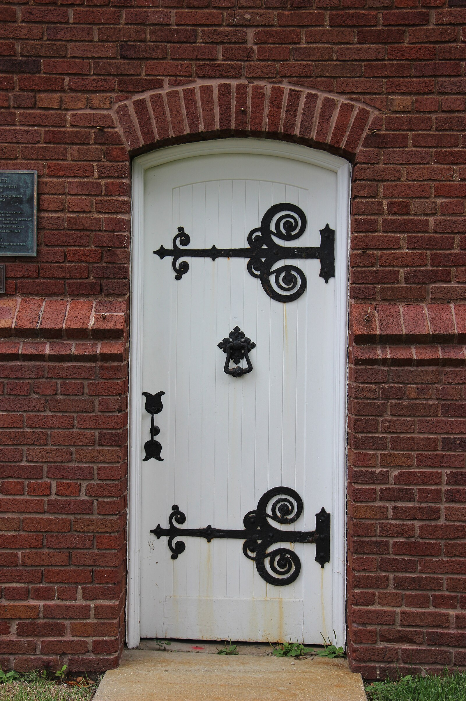

A Personal-Curiosity Benchmark · Draft
How does Hudson
actually compare?
A look at the services and amenities of Hudson, Ohio against thirteen wealth- and size-matched Ohio peer cities — from Solon and Bay Village to Bexley, New Albany, Chagrin Falls, and beyond.

How this benchmark works
Read the methodology
The subject is the City of Hudson, Ohio (Summit County). Peers were selected on two axes: population (roughly 10,000-30,000) and median household income (top-quartile in Ohio, generally above $120K). Demographics come from U.S. Census QuickFacts and ACS 5-year tables.
The 13 peers are split into three tiers:
- Tier A Core peers — closest match on size and wealth.
- Tier B Boutique comparators — smaller but culturally similar (Chagrin Falls, Madeira, Mariemont).
- Tier C Deliberate contrasts — Medina and Ravenna, included to show what Hudson isn't.
A few notable cities aren't peers but are cited throughout as aspirational exemplars — too big to be in the main set but illustrative of specific assets (Mason's aquatics, Dublin's public art program, Brecksville's natatorium, Upper Arlington's community center).
Caveat — Rocky River. Rocky River is in Tier A on geography and culture, but its median HH income (≈$94K) is meaningfully below Hudson's (≈$171K). It's kept for west-side Cuyahoga representation and flagged in its card.
Caveat — Medina. Medina matches Hudson on population (~26K) but not on income (~$77K median HH). It's included as a Tier C "what wealthy Hudson takes for granted" contrast, not as a wealth peer.
The Cities
Fourteen cards. Filter by tier or region; click a card to jump to its row in the comparison table below.
At a Glance
Click a column header to sort. Hudson is highlighted.
| City | Tier | Region | Pop. | Median HH | Muni Elec | Muni Fiber | Rec Center | Signature Amenity |
|---|
Amenities, Category by Category
The discovery section. The interesting differences between wealthy Ohio suburbs are usually here — in the "quiet convenience infrastructure," not the headline budget.
What Hudson has that most don't
Punching-Above-Their-Weight Exemplars
Not peers — too big, or too rich, or both. Cited here because they show what a high-service Ohio suburb can look like at the extremes.
What You Pay
Light touch — this is a curiosity piece, not a levy fight. Property tax is shown as a modeled bill on a $500K home using effective millage, which is the only fair way to compare across counties.
Schools, Briefly
Districts are separate legal entities from the cities, but they're central to wealthy-suburb identity. Per-city district one-liners below.